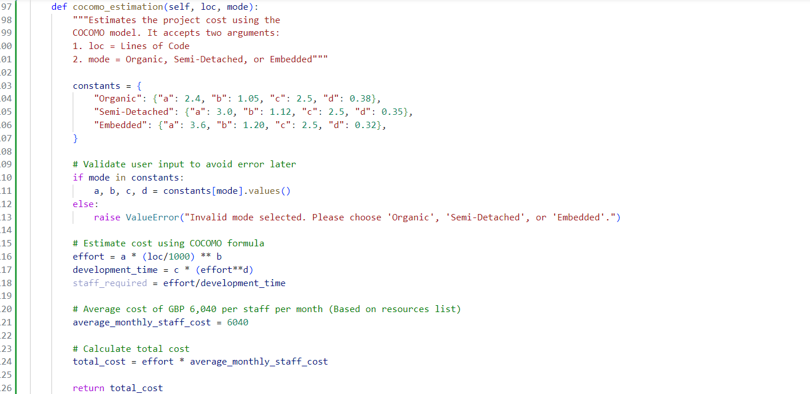
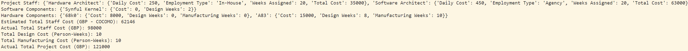

Unit 4: Artefacts
Collaborative Discussion
Part of this unit was to make a summary post based on peer responses, as well as the knowledge we have gathered over the past few units:
Summary Post

Python Estimation Program
Task 1: Create a python program that implements one of the estimation methods covered in the Lecturecast. You can use the Jupyter Notebook workspace in Codio and save your work to your GitHub repository.
One of the methods covered in the Lecturecast was COCOMO. In order to get an idea about how to implement COCOMO in Python, I conducted a little research and stumbled across this implementation on GeeksforGeeks.com.

One of the most important aspects to remember about COCOMO, is that its estimations heavily rely on LOC (lines of code). If this metric is not available, then it is relatively difficult to use the COCOMO model to predict cost.
Addendum: I revisited this activity in a later unit, specifically whilst working on the submission for the second assignment. As planned, I wanted to implement COCOMO as part of the Cost Estimator Python program. I took what I had learnt from the implementation above, and adjusted it to fit my "ProjectEstimator" class.
In order for the method to estimate project staffing costs, it accepts two arguments: 'loc' and 'method'. As defined by Boehm, there are three different methods within COCOMO.
- Organic
- Semi-Detached
- Embedded
These three methods refer to the type of software engineering project, allowing the COCOMO method to fine-tune its constants for a more accurate estimation. Within my function, I allow the user to specify the method/project type, as well as the amount of LOC written in this project. Using these two values and applying the COCOMO formulas gives us a rough estimate of how much the staffing would cost, based on the amount of effort required, as well as an assumed average cost per staff per month. For my example, I calculated the average staff cost based on the resources table provided to us as part of the case study for our assignment.
Running the code as part of the rest of the estimators' code gives the following result:
The calculated cost based on hard fact results in GBP 98,000, while the COCOMO estimation gives us an estimated cost of GBP 62,146, based on average staff cost and estimated effort required to create the system.
Task 2: Read the articles by Verner et al (2014) and Anton & Nucu (2020) and then answer the following questions:
- What are the main risks that the authors identify?
- Which of the frameworks discussed in the Unit 3 Lecturecast would you use to capture and categorise the risks?
Verner et al. (2014) risks
- Communication/Collaborations: Lack of face-to-face meetings, impacting trust and decision quality. Geographical distance adds to complexity for planning and coordinating activities, causing waits and delays in feedback.
- Vendor Selection Infrastructure: Incompatible or poor infrastructure.
- Cultural Risks: Language differences can cause misunderstandings, misinterpretations, and loss of information.
Personal Anecdote: Having worked in air traffic control simulations for several years now, and having been part of a few implementation projects, I have definitely experienced the above risks myself. For instance, as part of upgrading the existing airspace in preparation for the FIFA 2022 Qatar World Cup, my employer hired a consultancy firm to provide an airspace designer/planner to help us with designing a new airspace. While his experience in the field was greatly appreciated, he was located in Australia, which meant that whenever we were awake and at work, he was asleep, and vice versa. This meant that either side had to wait around 12 -24 hours to get feedback on their proposed changes.
At my current workplace, we have a multicultural staff, hailing from all accross the globe. Occassionally, this results in misunderstandings and miscommunications, due to the language barrier.
Anton & Nucu (2020) Risks
In a slightly different approach, Anton & Nucu (2020) categorize Enterprise Risk Management into four distinct areas:
- ERM Implementation: The application of ERM across various domains.
- Determinants of ERM Adoption: Understanding the factors that lead to adopting ERM systems.
- Effectiveness of ERM: Assessing how effective ERM processes are.
- Other Aspects of ERM: Includes other topics such as strategy and maturity of ERM.
Framework to capture risks
Based on the Lecturecast in Unit 3, I think PRINCE2 and PMBOK would be a good place to start. Both frameworks include guides about how to identify and mitigate risks, especially in terms of software engineering projects.
Personal Anecdote: I have previously studied the "Information Security Management" module and learned a lot about risk management frameworks such as OCTAVE, STRIDE and DREAD, among many others. This is the first time I have heard about PRINCE2 and PMBOK, so I am looking forward to learning more about them in the coming units.